Engage
UX/UI design and prototype
Design decisions, screens, design system and a usability test plan for Engage, the meeting engagement layer that runs beside any video meeting. Companion to the clickable prototype.
| Date | 13 October 2026 |
| Status | Draft for review. Designs are prototyped. Nothing is validated with users yet. |
| Primary device | Laptop, second window beside the meeting |
| Prototype | docs/design/prototype/index.html (also published as a private page) |
What this covers
This package designs the parts of Engage that are planned but not built, documents the design system the built app already uses, and sets out how to test it with people.
| Area | What exists | Status |
|---|---|---|
| Built screens | Landing, host console, join, attendee live and games, summary, recap. Running in the app | Built |
| Floating mini window | Pill, card and presenting states, first-use sharing note, dragging | Prototyped |
| Recall check | Attendee flow with "Missed that", host launcher and live results | Prototyped |
| Agenda segments and coach summary | Host chart by segment, segment detail, private coach summary | Prototyped |
| Error and empty states | 15 states with copy | Prototyped |
| Design system | Tokens, type, spacing, components, motion, copy, accessibility | Documented |
| Usability testing | Test plan with tasks, scripts and decision thresholds | Planned, not run |
| Templates, agenda editor, sign-in, history | Not designed yet | To design |
--on-accent, --border-strong, a darker --ok) are applied to the app stylesheet and the prototype. The tables in section 6 show the measured results.Design principles, translated into interface rules
| Principle | Interface rule |
|---|---|
| The meeting always wins | Everything minimises to a pill. One click pauses all prompts (Focus). Prompts expire and never repeat. No window opens over a presenter |
| Low pull | No sound, no notifications, no pop-ups over other windows. New prompts add a dot, not a window. One exception: the recall check, for up to 20 seconds, never while presenting |
| Measure only what Engage can see | No idle, quiet or speaking indicators anywhere in the interface |
| Transparent by default | The join screen states what the host can and cannot see. Host-only views are labelled "Only you can see this" |
| Never ranked | Points are private. Results are group percentages. No names beside answers |
| Zero friction | One click to the next state. Maximum two clicks to answer anything |
Three flows
Host
- Branch at step 3: if nothing needs action, the host does nothing. Quiet mode can run pulse checks.
- Branch at step 4: the host can ignore a suggestion. Nothing is sent to attendees until the host acts.
- Focus moment can be used at any step and pauses everything with one click.
Attendee
- Joining takes under 10 seconds. A returning attendee skips steps 2 and 3.
- Step 5: Focus pauses everything. The pill shrinks the window. Presenting closes it.
- Notes and action items stay on the attendee's device.
Presenter
- Step 3 can also be done from the pill before sharing starts.
- Sharing the entire screen would show the mini window. A first-use note says so.
- The off switch lives in the Engage tab, which the presenter is not sharing.
Screen inventory
| Screen | Purpose | Status |
|---|---|---|
| Landing | Create a meeting or join with a code | Built |
| Host console | Invite, room pulse, chart, moments, questions, games, quiet mode | Built |
| Join | Name or anonymous, with what the host can see | Built |
| Attendee live and games | Prompt, reactions, questions, bingo, prediction, notes | Built |
| Host summary and attendee recap | After-meeting results | Built |
| Mini window (pill, card, presenting) | Low-pull attendee view over the meeting | Prototyped |
| Recall check, attendee and host | Check that the message landed | Prototyped |
| Agenda segments, coach summary | Turn the chart into advice | Prototyped |
| Error and empty states | 15 states | Prototyped |
| Template picker, agenda editor, settings, sign-in, history | Setup and account | To design |
A pill that stays out of the way
The attendee view shrinks to a small pill in a corner of the meeting. Click the pill to open the card, the dash to shrink it, and the screen icon to close it while presenting. Drag it anywhere.
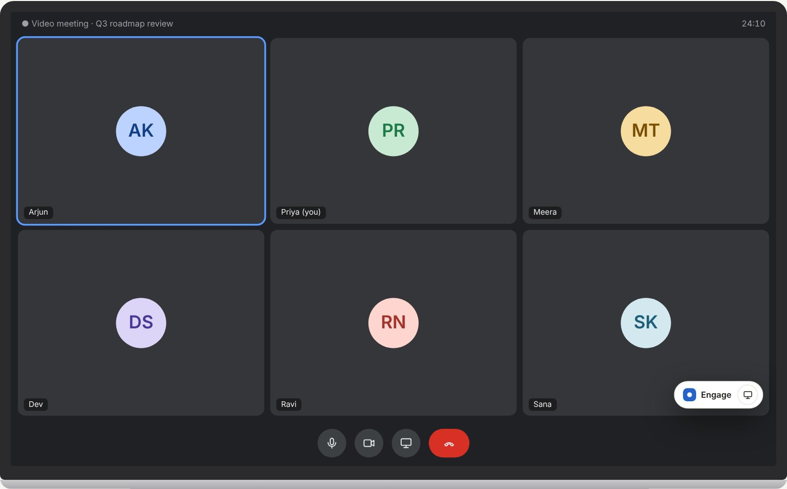
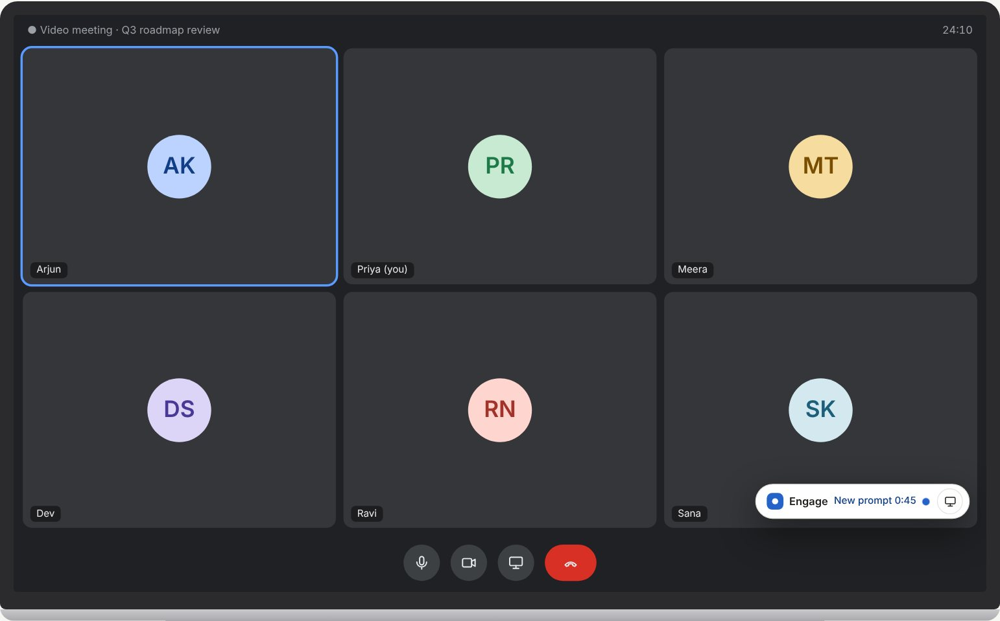
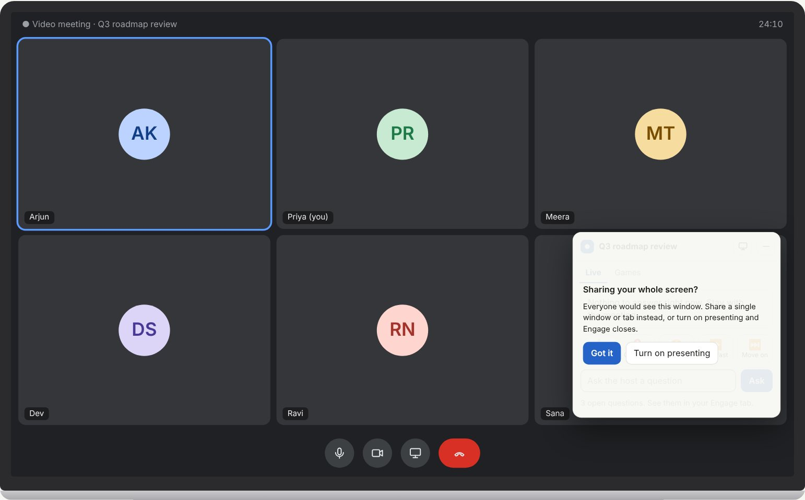
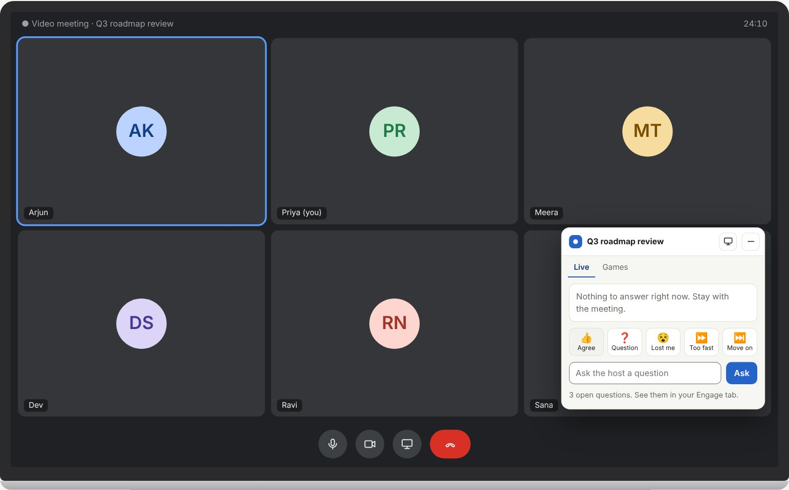
Interaction rules
| Event | Behaviour |
|---|---|
| Join | Starts as a pill in the bottom-right corner. The first time the card opens, a note explains that sharing the entire screen shows this window |
| New poll, floor invitation, games opening | Adds a dot and a short label to the pill. The dot pulses twice, then stays still. The window does not open |
| Recall check | Opens the card for up to 20 seconds, then shrinks 6 seconds after it closes. Never while presenting or in Focus. A setting in the prototype shows the alternative (dot only) |
| Focus moment | Pill shows "Paused". The card shows a dark banner and disables prompts and games |
| Presenting | Window closes. Nothing shows and nothing queues. Prompts that arrive are only counted ("2 skipped") |
| Dragging | Starts after 5 px of movement, so a click never moves the window. Position is kept inside the meeting area |
| Browsers without the floating window | Safari and Firefox keep Engage as a second window. The tab title shows a dot when something is waiting |
A check that is safe to answer honestly
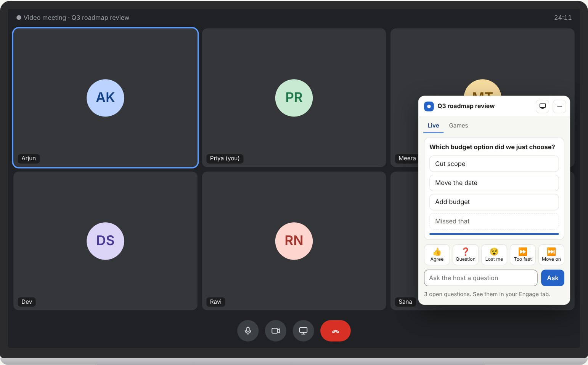
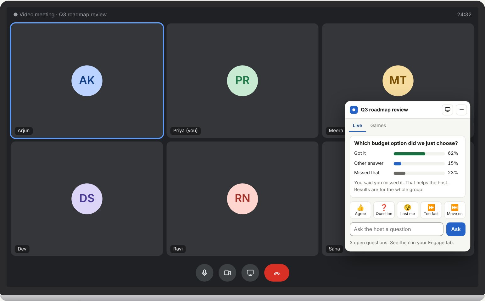
- "Missed that" has a dashed outline so it reads as a different kind of answer, not a wrong one.
- The timer is a thin bar. It is not announced to screen readers each second.
- After the check closes, attendees see group percentages and one line about their own answer.
- The host sees the same split plus a short reading of the result.
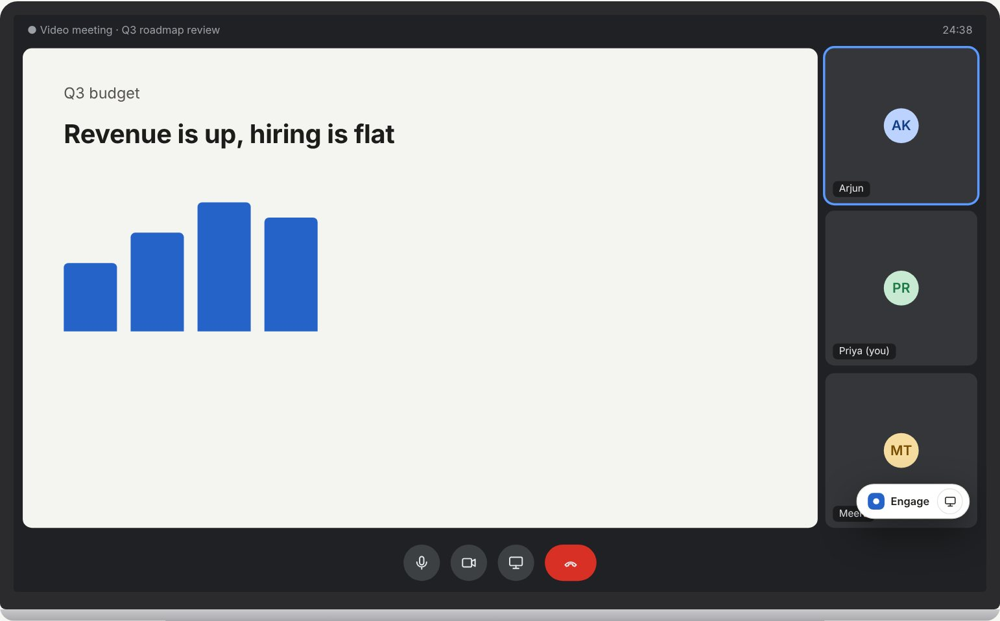
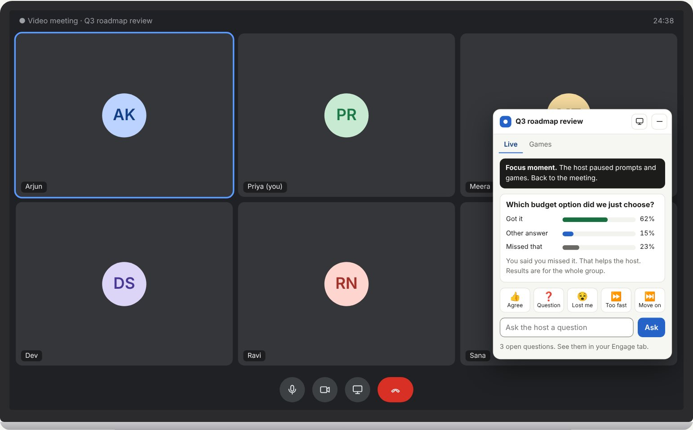
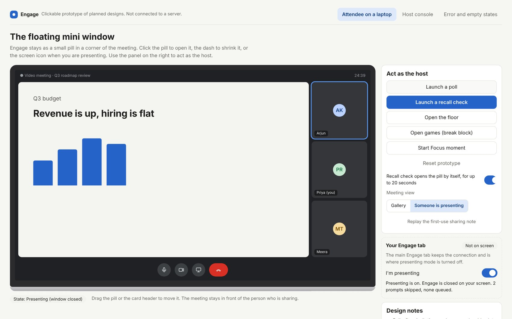
Turning the chart into advice
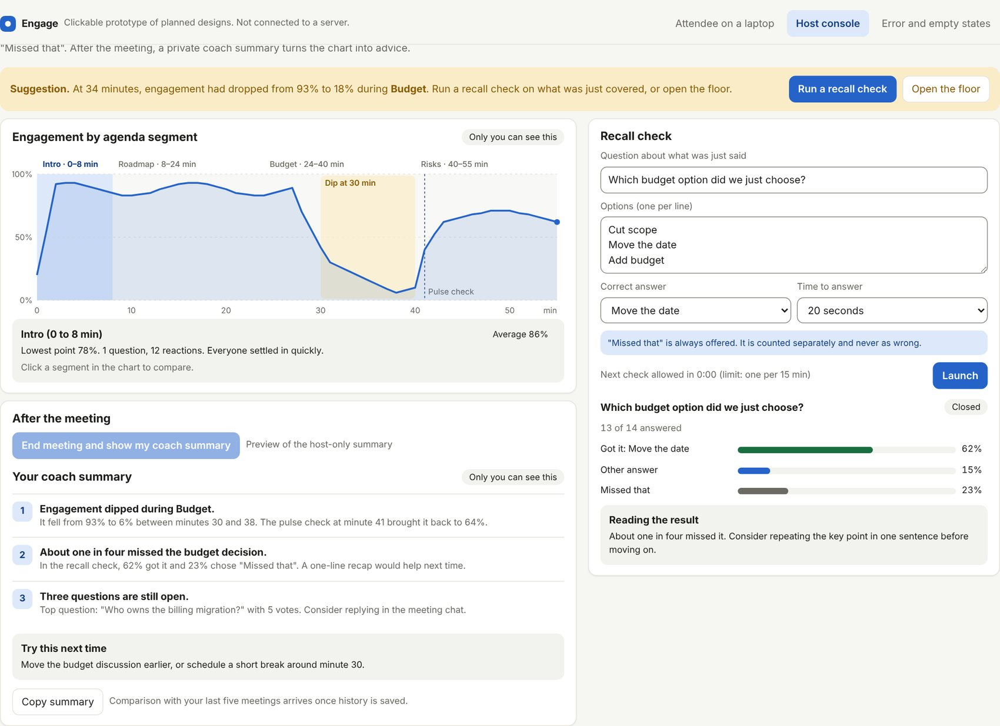
- Segments come from the agenda. Clicking a segment compares its average, lowest point and reactions.
- The suggestion banner names the segment, for example "dropped during Budget".
- The launcher always includes "Missed that" and shows a 15-minute limit between checks.
- The coach summary is private to the host. It gives three insights and one suggestion for next time.
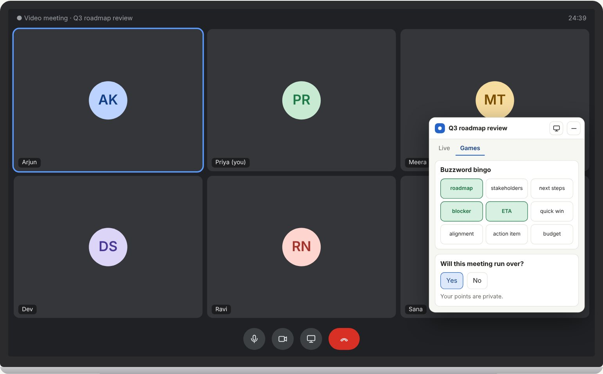
Tokens
The built app already uses these tokens as CSS custom properties in public/css/styles.css. Light is the default. Dark follows the system setting.
| Token | Role | Light | Dark |
|---|---|---|---|
--bg | Page background | #f6f6f3 | #151514 |
--surface | Cards, inputs, windows | #ffffff | #1e1e1c |
--surface-2 | Tiles, hover, tracks | #f2f2ee | #272725 |
--border | Dividers, card edges | #e4e3dc | #353532 |
--border-strong | Input and control edges | #85847d | #74746d |
--text | Primary text | #1c1c1a | #efefea |
--muted | Secondary text | #6a6963 | #a3a29a |
--accent | Primary action, focus ring | #2563c9 | #6ea2ff |
--accent-soft | Selected, info banner | #dde9fb | #1e3050 |
--accent-text | Text on accent-soft | #123e86 | #bcd3ff |
--on-accent | Text on accent | #ffffff | #0b1f44 |
--ok | Success text | #1a6f40 | #6fd69a |
--ok-soft | Success fill | #d8f0e1 | #173826 |
--warn | Warning text | #8a5a00 | #f0c25a |
--warn-soft | Warning fill | #fbecc8 | #3a2f12 |
--bad | Error text | #a3322a | #ff9d93 |
--bad-soft | Error fill | #f8dcd8 | #43201c |
Type
| Role | Size and weight | Used for |
|---|---|---|
| System sans | system-ui, -apple-system, Segoe UI, Roboto. No web fonts, so first paint is fast and nothing is blocked on a company network | |
| Page title | 26 px, 700 | Landing headline, summary title |
| Card title | 16 px, 700 | Card headings |
| Body | 15 px, 400 | Default text |
| Small | 12.5 to 13 px | Hints, labels, meta |
| Figure | 30 px, 650, tabular numbers | Room tiles |
| Code | 28 px mono, 600, wide tracking | Meeting code |
Space, shape and depth
| Item | Value |
|---|---|
| Spacing scale | 4, 8, 12, 16, 24, 32 px. Use gap, not margins |
| Radius | Controls 9 px. Cards 12 px. Floating window 14 px. Pills and chips fully round |
| Elevation | Cards use a hairline border and almost no shadow. Only the floating window has a strong shadow, because it sits over other content |
| Icons | Outline, 1.8 px stroke, round caps, 17 to 22 px |
Components
| Component | Variants and states | Notes |
|---|---|---|
| Button | Default, primary, ghost, selected, danger. Hover, active (scale 0.97), focus, disabled | Primary text uses --on-accent |
| Chip | Neutral, accent, success, warning | Always has text, never colour alone |
| Card | Default, soft | Border and radius only. No decorative stripes |
| Banner | Info, warning, Focus (inverted) | One sentence, optional one action |
| Tile | Label, value, sub-label | Room pulse only |
| Tabs | Selected has accent underline | Roving focus, role tablist |
| Result bar | Neutral, success (correct), muted (missed) | Percent shown as a number too |
| Switch | On, off | role switch, label states the effect |
| Input | Default, focus, error | Border uses --border-strong |
| Reaction button | Default, just pressed | Icon plus word |
| Question row | Open, answered, mine | Votes are a button with aria-pressed |
| Mini window | Pill, card, hidden | See section 3 |
Motion
- Colour changes 120 ms. Press feedback 80 ms. Result bars 250 ms. Switch 150 ms.
- The only looping effect is the pill dot, twice, 1.6 seconds each.
- Prompts appear without animation.
- With reduced motion on, all transitions and animation are off.
Accessibility specification
Measured contrast
Targets: 4.5:1 for text, 3:1 for focus rings and form control edges. Values are computed from the tokens above.
| Pair | Tokens | Target | Light | Dark |
|---|---|---|---|---|
| Body text on card | text on surface | 4.5:1 | 17.07:1 Pass | 14.47:1 Pass |
| Body text on page | text on bg | 4.5:1 | 15.76:1 Pass | 15.84:1 Pass |
| Muted text on card | muted on surface | 4.5:1 | 5.51:1 Pass | 6.51:1 Pass |
| Muted text on page | muted on bg | 4.5:1 | 5.09:1 Pass | 7.13:1 Pass |
| Muted text on tile | muted on surface-2 | 4.5:1 | 4.91:1 Pass | 5.84:1 Pass |
| Accent text on selected fill | accent-text on accent-soft | 4.5:1 | 8.32:1 Pass | 8.72:1 Pass |
| Primary button text | on-accent on accent | 4.5:1 | 5.67:1 Pass | 6.4:1 Pass |
| Accent used as text | accent on surface | 4.5:1 | 5.67:1 Pass | 6.58:1 Pass |
| Success text on fill | ok on ok-soft | 4.5:1 | 5.15:1 Pass | 7.22:1 Pass |
| Warning text on fill | warn on warn-soft | 4.5:1 | 5.06:1 Pass | 7.88:1 Pass |
| Error text on card | bad on surface | 4.5:1 | 6.89:1 Pass | 8.35:1 Pass |
| Error text on fill | bad on bad-soft | 4.5:1 | 5.32:1 Pass | 7.18:1 Pass |
| Focus ring on card | accent on surface | 3.0:1 | 5.67:1 Pass | 6.58:1 Pass |
| Input border on card | border-strong on surface | 3.0:1 | 3.75:1 Pass | 3.55:1 Pass |
| Input border on page | border-strong on bg | 3.0:1 | 3.47:1 Pass | 3.88:1 Pass |
Specification
| Area | Requirement |
|---|---|
| Keyboard | Every control reachable and operable by keyboard. Visible 2 px focus ring with offset. Escape shrinks the card to the pill and returns focus to it (specified, not yet in the prototype) |
| Screen readers | A polite live region announces a new prompt once. The countdown is hidden from assistive technology. Results are announced when closed. The presenting control is a switch |
| Target size | Mini window icon buttons are 30 to 34 px, above the 24 px minimum in WCAG 2.2. Primary actions are at least 34 px tall. Use 44 px on touch |
| Colour | State is never shown by colour alone. Chips and banners carry text |
| Zoom and reflow | Layouts reflow at 200% zoom. No horizontal scroll down to 360 px |
| Motion | Respects reduced motion. No flashing |
| Audit | Not yet done. Run an automated scan and a manual screen reader pass before the pilot (see the engineering plan) |
Writing for the interface
| Rule | Example |
|---|---|
| Say what happened, then what to do | "Connection lost. Reconnecting. Your answers so far are saved." |
| Name things by what people recognise | "Missed that", "I'm presenting", "Focus moment" |
| A control says what it does | "Turn on presenting", "Launch", "Close and show results" |
| No blame, no pressure | "Not this time." Never "Wrong" |
| Plain and short | Avoid "gamify", "engagement score", "leaderboard" |
| Respect privacy in words | "Only you can see this", "Results are for the whole group" |
Fifteen states, none blocks the meeting
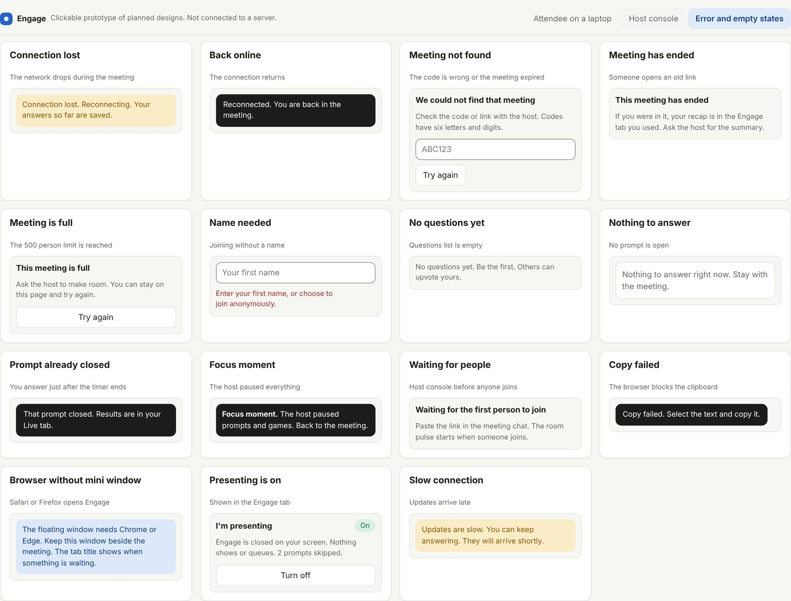
States covered: connection lost and restored, meeting not found, ended or full, name needed, no questions, nothing to answer, prompt already closed, Focus, waiting for people, copy failed, browser without the mini window, presenting on, and slow connection.
Test the prototype with real people
Goals
- Find out whether attendees feel pulled out of the meeting by the pill, the badge or the recall check.
- Check that "Missed that" feels safe and that people use it honestly.
- Check that hosts understand the suggestion banner, the agenda chart and the coach summary.
- Check that presenting mode is easy to find, trust and turn off.
Method
| Item | Plan |
|---|---|
| Participants | 5 hosts and 8 attendees from different teams. Include at least 2 people who run long meetings and 2 who rarely speak |
| Format | 30 minutes, moderated, think aloud. The prototype runs on a laptop beside a real or recorded meeting |
| Prototype | Clickable prototype for new features. The working app for the built screens |
| Recording | Notes and screen recording only with consent. No meeting content is collected |
Attendee tasks
| # | Task | Success |
|---|---|---|
| A1 | Join from the link and say what the host can see | Correctly states at least two items |
| A2 | The host asks a poll. Answer it while following the discussion | Answers within 30 seconds without help |
| A3 | A recall check opens. Answer, then say how it felt | Chooses honestly. Rates pressure 3 or lower of 5 |
| A4 | You are about to share your screen. Make sure Engage does not show | Finds and uses presenting within 20 seconds |
| A5 | After sharing, bring Engage back | Turns presenting off from the Engage tab |
| A6 | Move the pill out of the way and shrink the card | Done without help |
Host tasks
| # | Task | Success |
|---|---|---|
| H1 | Start a meeting and invite people | Shares the link in under 30 seconds |
| H2 | Read the room and say what the banner suggests | Explains the suggestion in their own words |
| H3 | Run a recall check and interpret the result | Distinguishes missed from wrong |
| H4 | Find which agenda segment lost people | Identifies the segment from the chart |
| H5 | Read the coach summary and pick one action | Chooses an action and says why |
Questions after the session
- "At any point, did Engage pull your attention away from the meeting?" (1 to 5, then why)
- "Did anything make you feel watched or judged?"
- "Would you leave Engage open for a whole meeting?"
- "What would make you turn it off?"
- Single Ease Question after each task (1 to 7).
Measures and decision thresholds
| Measure | Threshold to proceed |
|---|---|
| Task success | At least 80% unaided across tasks |
| Distraction rating | Median 2 or lower of 5, and no more than 1 in 10 says "pulled me out" |
| Felt watched | 0 of 13 describe the product as monitoring |
| Presenting mode | At least 6 of 8 find it unaided |
| Would keep it open | At least 60% yes |
If distraction or "felt watched" fails, change the interaction before building more. If presenting mode is not found, move the control or add a first-run hint.
Open design questions
- Should the recall check open the pill itself, or only add a dot? The prototype has a switch so testers can compare.
- Is the pill's 190 px width too large in a corner of a small laptop screen?
- Do people expect Escape to close or shrink?
- Where should a host set up the agenda: before the meeting, or from a calendar event?